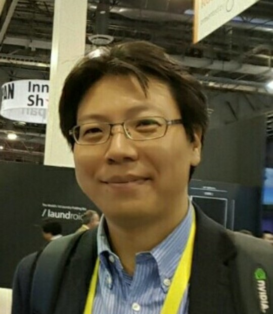
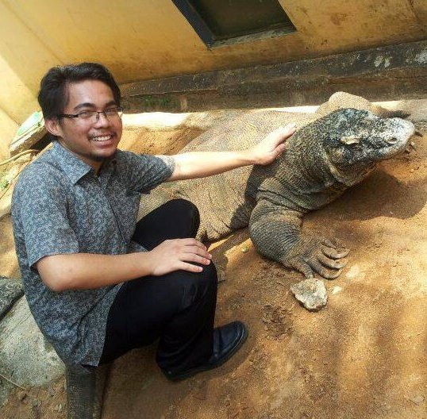
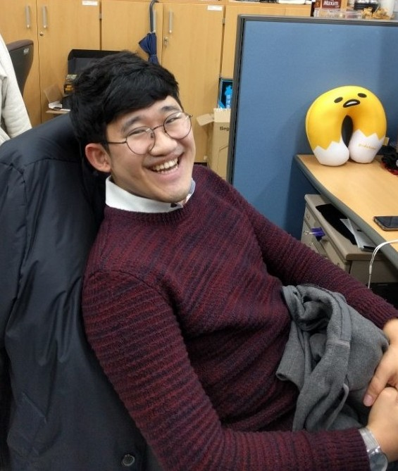
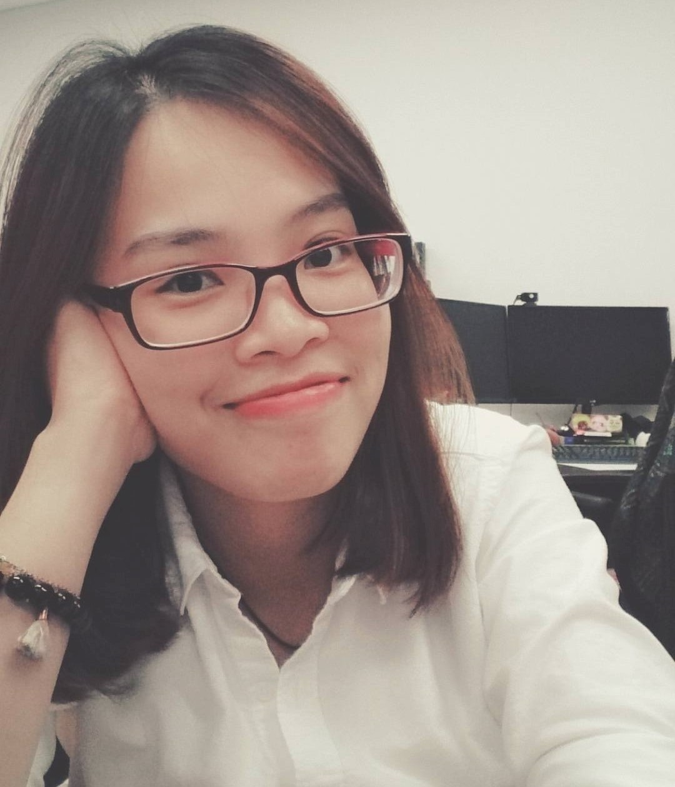

Jae-In (Jane) Hwang, Dr. - Senior Research Scientist
Mobile Mixed Reality, Mobile 3D User Interfaces +82-2-958 5762 hji@kist.re.kr View Profile
View my profile for more information.

Muhammad Firdaus Syawaludin Lubis - Ph.D. Student
VR, AR, AI, Image Processing +82-10-6826-1596 firdaus.lubis@kist.re.kr View Profile
Firdaus was born in Jakarta, Indonesia. He completed B.Sc. and M.Sc. degrees in the field of electrical engineering in 2010 and 2013 from Universitas Indonesia. As a PhD student with Dr. Hwang Jae-In, he is studying VR/AR for Remote Collaboration.

Juyoung Lee - Research Assistant
VR/AR, HCI, Machine Learning TBA jyleegoo@kist.re.kr YouTube
Juyoung completed B.S degree in electronic & information engineering from SEOULTECH, Seoul, Korea in 2017. After returning from China for the exchange student, he became interested in HCI. He minored in industrial design at the undergraduate and joined MR lab to continue to research VR/AR and HCI. Nowadays, he is considering how to match motion of user and visual information of VR.

Chanho Kim - Research Assistant
Image Processing, VR, HCI +82-10-3265-2646 chkim91@kist.re.kr View Profile
Chanho received the B.S. degree in electrical and electronical engineering from Korea University, Seoul, Korea, in 2017. Right after the graduation, he attended MR Lab and became an Intern Researcher.

Hong-Quan Le - Research Assistant
HCI, VR, MR, UI/UX +82-10-5398-3568 091323@kist.re.kr View Profile
Quan comes from Vietnam. She came to Korea for M.Sc. degree in the field of Human Computer Interaction (HCI) in Konkuk University from 2014 to 2016. Before joining to MR lab, she worked as a Research Assistant in HCI lab, studying about AR and VR. In 2017, she decided to go to KIST and continued her research in MR lab.

Ghazanfar Ali - Integrative Student
HCI, AI, Machine Learning +82 10-3411-6785 johndoe@email.com Twitter View Profile
Ali did his B.E Computer Engineering from NUST – Pakistan in 2014. In 2013 he cofounded a startup named Xetecx Solution which aimed at providing IT Solutions to Local Clients. He is a former Faculty Member in a Pakistani University. In Fall 2017 he came to KIST as UST student in Integrative program and started working in MR Lab. He is currently researching the use of AI in real world through Augmented Reality.